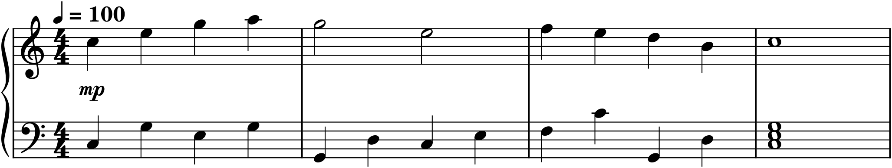

The first two projects gave you material to work on — a melody to notate, a melody to harmonize. This one gives you nothing but the blank page, because this time the melody is yours. You will compose an original tune and set it with an accompaniment, producing a small but complete piece of music that is entirely your own invention. It is the most important project we do, for two reasons: it is the first thing here you will have truly composed, and it is the seed of everything to come. The melody you write now is the one you will arrange for an ensemble in Part 5 and orchestrate in Part 7. Choose it with a little care — you will be living with it for a while.
The brief
Compose an original melody of eight to sixteen bars, with a clear phrase structure and cadence, and give it an accompaniment — a left-hand pattern that states its harmony. The result should be a complete short piece for piano (or any melody instrument plus accompaniment), with tempo and dynamics marked. Save it: this melody carries forward into Parts 5 and 7.
P3.1Find a seed
Do not try to invent a whole melody at once. Start with a seed — a fragment small enough to hold in your head — and grow it. Chapter 20 gave you the two doors, and either works:
- Start from a motive. Invent a short rhythmic-melodic cell you like — three or four notes with a distinctive shape (Chapter 17) — and plan to grow the melody by developing it (Chapter 19).
- Start from a progression. Choose a chord progression you like the sound of — something as simple as I–IV–V–I, or the circle-of-fifths pull of vi–ii–V–I — and plan to write a melody over its chord tones (Chapter 20).
Most composers favour one door or the other by temperament. If tunes come to you, start from the motive; if you think at the keyboard in chords, start from the progression. There is no wrong choice, because — as Chapter 20 showed — each implies the other, and you will end up with both regardless.
P3.2Grow the melody
However you began, shape the seed into a real melody using the tools of this whole part:
- Give it a clear contour with a single climax (Chapter 17) — the line should go somewhere and peak once.
- Move mostly by step, with leaps for drama and a step back to recover; keep it in a singable range.
- Build it from your motive, developed by repetition, sequence, and variation (Chapters 17 and 19), so the melody has unity rather than wandering.
- Organize it into a phrase structure (Chapter 18) — a parallel period (question-and-answer) or a sentence (statement-and-growth) — ending each phrase with the right cadence: a half cadence to pause, an authentic cadence to close.
Aim for eight bars first; if it wants to be sixteen, let it grow by adding a second period or a contrasting middle. Play it constantly as you write, and trust your ear — if a note sounds wrong, it is.
P3.3Set the harmony
If you started from a progression, your harmony is already chosen. If you started from a motive, harmonize the finished melody now, exactly as in Project 2: read the chords out of the melody’s strong-beat notes (Chapter 20) and choose a progression that supports it and lands on a strong cadence. Keep it simple — a handful of chords, mostly I, IV, V, and vi, is plenty for a first piece. Sketch the harmony as chord symbols above the staff so you can see it whole.
P3.4Add an accompaniment
Now turn the harmony into texture (Chapter 21). Choose an accompaniment pattern that fits your melody’s character — block chords for weight, a broken-chord arpeggio for flow, an Alberti bass for Classical lightness — and write it in the left hand beneath the tune. Here is our running melody, carried through exactly this process, from the bare phrase of the Preface to a finished little piece:

The little piece in Figure P3.1 is the model for your deliverable. Notice how modest it is — four bars, a handful of chords, a simple broken-chord left hand — and yet it is whole: it has a tune, a harmony, a texture, a tempo, a dynamic, and a cadence. Yours should be the same kind of thing, only longer and entirely your own. Do not aim for impressive; aim for complete and coherent. A small idea, well finished, is the goal (as the Preface promised).
P3.5Refine and finish
Add the expression that makes it playable and alive (Chapter 10): a tempo marking, dynamics, phrase slurs, perhaps a ritardando at the end. Then check it whole — play it top to bottom, listen for anything that clashes or sags, and fix it. Make sure the accompaniment stays out of the melody’s way (Chapter 21): mostly below it, never busier than the tune at the same moment. Finally, save it with a clear name and keep it somewhere safe. You will want it again.
Compose at the keyboard, judge by ear
Whatever the theory says, the final judge of a melody is whether it sounds good, and the only way to know is to hear it — repeatedly, out loud, as you write. Enter a phrase, play it, change what bothers you, play it again. Composing is not solving a puzzle on paper; it is a conversation between your ear and your hands, with the theory as a guide when you get stuck. Trust the theory to get you unstuck, but trust your ear to tell you when it is right.
P3.6Going further
Write a contrasting second section and make an eight-bar piece into a sixteen-bar one — which is already the beginning of form, the subject of Part 4. And keep this piece where you can find it: in Project 5 you will arrange it for an ensemble, and in the Capstone you will orchestrate it. This little tune of yours has a long life ahead.
Done when…
- The melody is original, eight to sixteen bars, with a clear contour and one climax.
- It is built from a motive and organized into phrases with proper cadences (a period or a sentence).
- It has a harmony, realized as an accompaniment pattern in the left hand that supports without crowding the tune.
- Tempo, dynamics, and phrasing are marked; the piece is complete enough to hand to a player.
- It is saved and named — because Parts 5 and 7 begin from this file.